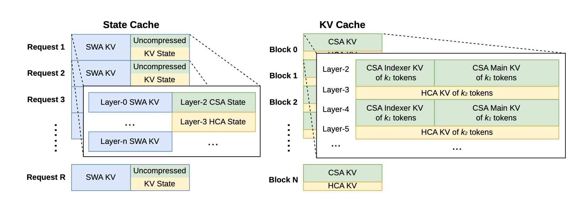

推理框架 — KV 的异构调度
为什么 SWA / CSA / HCA / Indexer 四种 KV 不能共用 PagedAttention 的统一布局，V4 的 State Cache + Block Cache 二分设计怎么把"位置敏感的尾巴"与"压缩好的躯干"分别管理，以及盘上 KV 缓存怎么让百万 token 的 prefill 在共享前缀下接近免费。
推理框架要解决：(1) V4 各层 KV 形状各异（SWA 1×、CSA 1/m、HCA 1/m'、Indexer 极小），统一 page 装不下；(2) SWA 有"窗口外即丢"的过期策略与 page 通用回收冲突；(3) 1M 上下文下盘上 KV 复用前缀
一句话：把 KV cache 切成 State Cache（位置敏感、按请求分配）和 classical KV cache（压缩完成、按对齐块管理），分别处理不同的更新与访问规则。共享前缀可将压缩 KV 落盘复用，从而减少重复 prefill。 命中缓存并不等于整个 prefill 免费：末尾未完成压缩的 token 仍需重算，SWA 的恢复成本则取决于所选缓存策略。
- KV Cache
- Transformer 推理会缓存历史 key/value 供后续 token 使用，缓存体积通常随序列长度增长。V4 通过 CSA/HCA 压缩、SWA 固定窗口和异构布局降低长期存量；具体字节数取决于模型、精度和部署布局，报告没有给出统一的“每请求 60MB”。
- SWA / CSA / HCA / Indexer 四类 KV
- SWA（滑窗）：每层只保留最近 $n_{\text{win}}=128$ token；CSA：每 $m=4$ token 形成压缩条目；HCA：每 $m'=128$ token 形成压缩条目；Indexer：为稀疏选择保存独立的 key。它们的尺寸与更新规则不同，不能直接套用同一种 cache policy。
- PagedAttention（vLLM 经典方案）
- 把 KV cache 分成固定大小的 block，并按请求动态分配。V4 报告指出，混合注意力带来的不同缓存策略和 kernel 对齐约束，使所有层难以直接合并到统一的 PagedAttention 管理方式；问题不只是“各层大小不同”。
- State Cache（V4 的位置敏感缓存）
- 装对位置敏感的部分：SWA 当前窗口、CSA/HCA 还没压缩满的尾部 token。按"请求 → 状态块"映射，请求结束就释放整块。不与其他请求共享。这是 V4 把"位置敏感性"显式表达的设计。
- Block Cache（V4 的压缩好缓存）
- 装已经压缩完成的 CSA/HCA KV 与 Indexer KV。原始 token 数按 $\mathrm{lcm}(m,m')$ 的整数倍对齐；最小对齐单位是 128，但实际 block 可以取其任意倍数。相同前缀对应的完整压缩块可以复用。
- lcm(m, m') 对齐分块
- CSA 每 4 token 压缩一次，HCA 每 128 token 压缩一次。为让两类边界同时对齐，block 覆盖的原始 token 数应是 $\mathrm{lcm}(4,128)=128$ 的整数倍；128 是最小单位，而非唯一 block 大小。
- 过期策略冲突
- SWA 有"窗口外即丢"的过期：滑窗向前推 1 token，最早的 token 就要清除。Page 通用回收没有这个语义 —— 它只在请求结束时回收，SWA 中间过期的 page 无法回收。所以 SWA 必须独立管理。
- 盘上 KV（Disk-resident KV cache）
- 把已计算的压缩 KV 存到磁盘，命中共享前缀时读取并复用完整压缩块。尾部不完整块仍需重新计算；SWA 则可在完整缓存、周期检查点和不缓存之间取舍。
- 三档 SWA 缓存策略
- Full SWA Caching：每个请求 SWA 全落盘。最快但 SSD 写入压力大；Periodic Checkpointing：每 $p$ 个 token 落一次盘，命中后只重算 tail；Zero SWA Caching：不存 SWA，命中时仅靠 CSA/HCA 重算最后 $n_{\text{win}}\cdot L$ 个 token。三档对应不同存储 / 算力权衡。
1. PagedAttention 在 V4 下为什么不够用
PagedAttention 的优雅在于"把 KV 看作通用 page"。这件事在 V3 / Llama 时代成立，因为所有层都是同一种 attention，KV 形状统一。V4 改变了这个前提：
- SWA KV：只保留最近 $n_{\text{win}}=128$ 个位置，并采用独立的命中与淘汰策略；
- CSA KV：每 $m=4$ 个原始 token 生成一个压缩条目；
- HCA KV：每 $m'=128$ 个原始 token 生成一个压缩条目；
- CSA Indexer KV：embedding size 与主注意力不同，并额外服务稀疏选择。
- 条目形状与更新频率不同：CSA、HCA、Indexer 和 SWA 不能共享一种同构布局；
- 过期策略冲突：SWA 滑窗外即丢，page 不知道何时回收；
- kernel 对齐：高性能 attention kernel 对 block token 数与 cache-line padding 有约束；V4 通过 cache layout 与 sparse-attention kernel 协同设计，使 block 可覆盖 $\mathrm{lcm}(4,128)$ 的任意整数倍原始 token。报告没有以 16-token page 作为冲突示例；
- 压缩边界：CSA / HCA 的压缩计算横跨 page 边界，page 的"独立单元"假设破坏。
2. V4 的二分设计：State Cache + Block Cache
2.1 State Cache：位置敏感的尾巴
State Cache 装两类东西：
- SWA 当前窗口：每层最近 $n_{\text{win}}=128$ token 的 K/V；
- 压缩尾部：CSA / HCA 还没压满 $m$ / $m'$ 个 token 的尾段（称 "in-flight tail"）；
按请求生命周期从固定大小的 state-cache pool 动态分配。报告没有给出单个 State Block 的统一字节数；其大小由 SWA 窗口、层配置与未压缩尾部状态共同决定。
2.2 Block Cache：压缩好的躯干
Block Cache 装已压缩的：
- CSA 压缩条目（每 4 token 1 个）；
- HCA 压缩条目（每 128 token 1 个）；
- Indexer K（每 token 1 个 FP4 K-only）；
原始 token 数按 $\mathrm{lcm}(4,128)=128$ 的整数倍对齐。若以最小单位 128 举例，会对应 32 个 CSA 压缩位置和 1 个 HCA 压缩位置；实际 block 大小可以更大。相同前缀的完整压缩块可以跨请求复用。
$m = 4$, $m' = 128$。要让 CSA 边界（每 4）与 HCA 边界（每 128）同时落到 block 边界：
- $\mathrm{lcm}$ 是最小公倍数：能被 $m$ 整除（CSA 边界对齐），也能被 $m'$ 整除（HCA 边界对齐）；
- 最小对齐单位的输出：CSA 条目 = $128 / 4 = 32$ 个；HCA 条目 = $128/128 = 1$ 个；
- 如果 $m, m'$ 互素，$\mathrm{lcm} = m \cdot m'$；本例 $m | m'$ 所以 $\mathrm{lcm} = m'$。
报告强调的是 KV cache layout 与 sparse-attention kernel 的协同：block 覆盖的原始 token 数取 128 的整数倍，可以在不同层使用不同压缩条目数而不降低 kernel 性能。它没有把 block 固定为 128，也没有用 SWA 窗口来“锁死”这一取值。

读图法：上排是 Block Cache —— 每 128 token 凑成一块，块内 32 个绿条（CSA）+ 1 个蓝条（HCA）。这部分可跨请求共享，前缀命中时直接 mmap 进显存。
下排是 State Cache —— 黄段是 SWA 128 窗口（每请求独占），橙段是不足 128、尚未完成 HCA 压缩的 tail。请求结束后归还到 state-cache pool。
把 token 数从 8192 拉到 32768，可以看到 classical KV blocks 随序列增长，而 State Cache 只保留固定 SWA 窗口和未压缩尾部。它显著降低了长期状态，但压缩 KV 本身仍随上下文长度增长。
3. 盘上 KV：让百万 token 的 prefill 在共享前缀下接近免费
长上下文应用的典型 pattern：
- System prompt：每请求都带的几千 token 引导词；
- RAG / 文档问答：同一文档反复被多个 query 查；
- Code agent：同一仓库被多次 attach；
这些前缀跨请求重复，每次都从头 prefill 是巨大浪费。V4 把压缩好的 Block Cache 序列化到 SSD：
- 请求开始时，对 prompt 哈希 → 查 SSD 是否有命中；
- 命中 → 读取并复用截至最后一个完整压缩块的 KV；尾部不完整块仍需重算；
- 未命中 → 正常 prefill 后落盘，下次命中。
- 无盘上 KV：每个请求都要重新计算共享前缀；
- 盘上 KV 命中：读取压缩 KV，只重算尾部和所选策略要求恢复的 SWA 状态；
- 实际收益取决于 SSD 带宽、前缀长度、命中率和 SWA 策略。报告没有给出 30 秒、2 秒或 13× 等固定数字。
3.1 SWA 三档策略
Block Cache 落盘很简单（已压缩，体积小）。State Cache 难处理：SWA 是位置敏感的，落盘后下次命中时位置可能不一样。三档策略：
- Full SWA Caching：保存每层完整的 SWA 状态，命中时需要的重算最少，但会增加存储写入与容量压力；报告没有给出单请求固定为 25GB 的数字。
- Periodic Checkpointing：每隔可调参数 $p$ 保存最近 $n_{\text{win}}$ 个 token 的 SWA 状态，命中后从最近检查点恢复并重算尾部；报告没有指定固定的 $p$。
- Zero SWA Caching：完全不存 SWA。对 $L$ 层模型，借助已缓存的 CSA/HCA KV，最多重算最后 $n_{\text{win}}\cdot L=128L$ 个 token，以恢复末层所需的 SWA 状态。
三种策略分别偏向命中恢复速度、存储开销或实现简洁性；应根据命中率、SSD 带宽和可接受的重算量选择。报告没有指定“典型部署”的固定组合。
本章小结
- PagedAttention 的同构 cache 假设不适合 V4 的 SWA、CSA、HCA 与 Indexer 状态，因此报告采用异构管理。
- State Cache：保存 SWA 和未完成压缩的尾部；classical KV cache：保存已完成的 CSA/HCA 与 Indexer KV，并按 128 的整数倍对齐。
- State Cache 大小受固定窗口约束；压缩 KV 仍随上下文长度增长，只是增速显著低于未压缩注意力。
- 盘上 KV 与三种 SWA 策略减少共享前缀的重复计算；实际收益依赖部署条件。
- 这套设计与 Ch11 的 two-stage CP 是训推对偶：训练时跨 CP rank 桥接压缩边界，推理时跨请求共享压缩 block。压缩这一动作是 V4 的统一原语。